Lab access and tenant configuration
Accessing your Lab -- [Approx 10 min]
-
Open a browser on your laptop and go to https://dcloud.cisco.com
-
Click Login at the top right corner and log in with your cisco.com credentials
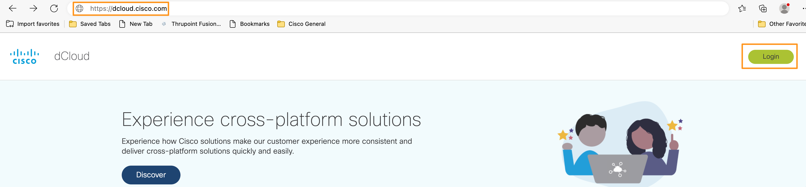
-
Once logged in, open a new browser tab and paste the event URL for your lab. The event URL is Update later
-
You will be automatically assigned to a lab session and will be taken to the lab topology page as shown below.
-
Click on the Workstation 1 Charles Holland icon on the topology page and it will bring up a fly-out window on left with Workstation 1 related information like IP Address, username, and password as shown below.
-
Similarly, you can click on any other Virtual Machine on the topology page to get its accessing details.
-
In this lab, you will access Workstation 1 (through WebRDP or Remote Desktop) and from Workstation 1 you will be able to access all the other virtual machines or Cisco UC applications like Cisco UCM, CUBE, etc., to complete the lab tasks.
-
There are two ways you can access Workstation 1. You can either connect via a local RDP connection (option A - preferred) connection or via a WebRDP connection (option B) from your classroom laptop.
Option (A) -- [Preferred]
To connect to the Workstation using your local RDP connection, first, you need to connect to your lab session via a VPN. Open Cisco AnyConnect on your laptop. It will prompt you for the Host Address, username, and password information for your session. You will find all these details under the Info \ AnyConnect Credentials section of your lab. Enter all the details as shown below and click OK to connect to your session. The Host Address, username, and password will be different for each lab. Use YOUR OWN assigned lab details.
Once you are connected to your lab session over VPN, you can open a local RDP connection on your laptop and connect to Workstation 1 using the following details:
Host: 198.18.1.36
Username: dcloud\cholland
Password: dCloud123!
Option (B)
To access Workstation 1 over WebRDP, click on the Workstation 1 icon on the topology page and when it brings up a fly-out window with workstation details. On the fly-out window go to click on the Remote Access \ Web RDP. It will open a new browser tab and connect you to Workstation 1.
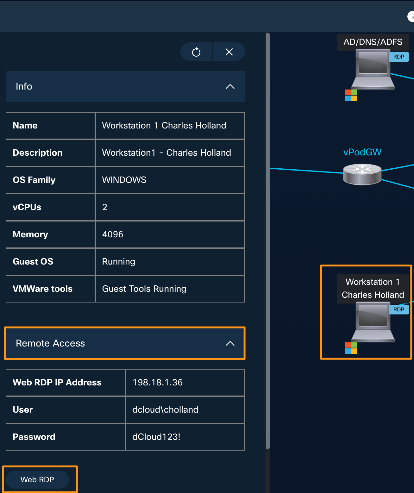
-
On the lab topology page, click on the Info tab on the top a fly-out window will open on left side. Here you will find all your lab-specific access information like the Session ID, DNS Domain name, PSTN Numbers, etc., You will need all this information throughout this lab session. All this information is captured and put in a text file called Lab_info.txt file on Workstation 1's Desktop. Once you have connected to Workstation 1 using one of the methods mentioned above, open the text file Lab_info.txt located on Desktop and review it. Keep this file open and handy as you will need this information throughout the lab.
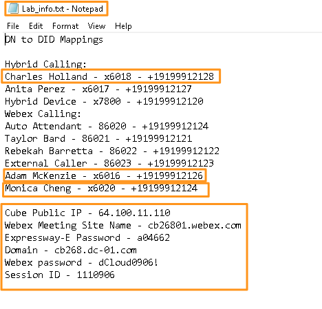
{kind=link}
{kind=link}
{kind=link}
Below information is just for reviewing purpose only.
Session ID: you will find it under the details tab, as shown above (Example 1041368)
Control Hub password: dCloud1368! (dCloud + last four digits of session ID + !)
Domain Name: Go to the Info tab of your session and scroll down to see the DNS section. It will be in the cbXXX.dc-YY.com format.
Expressway -- E Password: Same as AnyConnect password, found under Info tab \ AnyConnect Credentials.
{kind=link}
Configuring Microsoft trial Tenant - [Approx 15 min]
In this lab, we are going to use a temporary Microsoft trial tenant. These tenants will have random domain names assigned as part of the trial creation process. To make it easy to go through the lab we are going to add your session specific domain cbXXX.dc-YY.com (with which On-Prem Cisco UC applications, AD and Webex Control Hub have been setup with) to the Microsoft tenant and update the users on Microsoft tenant with this new domain (cbXXX.dc-YY.com) so that all client and application logins for users in this lab will be with one single domain cbXXX.dc-YY.com. The cbXXX.dc-YY.com will be different for each attendee [XXX and YY will be different for every participant and can be found on the dCloud session (under Details) page]. Please note in production environments you will NOT need to do these changes as the Microsoft domain and other domains (like On-Prem UC server, Webex, AD etc.,) will be usually same.
Add cbXXX.dc-YY.com domain to the Microsoft Trial tenant [Approx 10 min]
-
Make sure you have connected to Workstation 1 using one of the options described above. Then, open the Chrome browser and go to Collaboration Admin Links \ Microsoft Admin Center. Or you can directly go to https://admin.microsoft.com
-
Log in with Microsoft Trial tenant credentials given for your pod by your proctor. Email will be in the format of, cholland@dtbxxxxx.onmicrosoft.com and the password is dCloud123!
-
Once logged into the Microsoft admin center, on the left side pane go to Setup. On the Setup page under Sign-in and security click Get your custom domain setup.
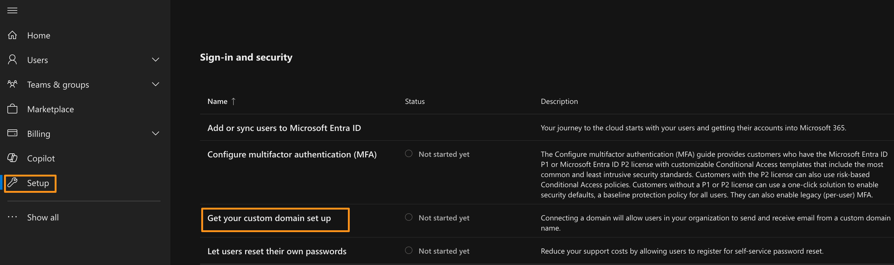
-
On Get your custom domain setup page, click Get started.
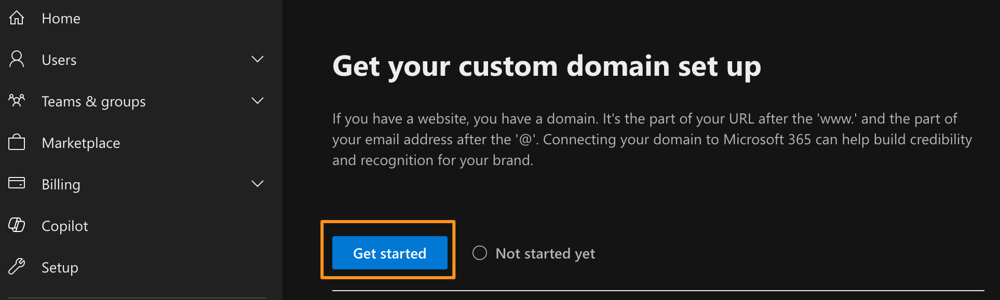
-
On the Add a Domain page, enter your session domain name (from Lab_info.txt file you have opened above, it will be in the format of cbXXX.dc-YY.com) and click Use this domain.
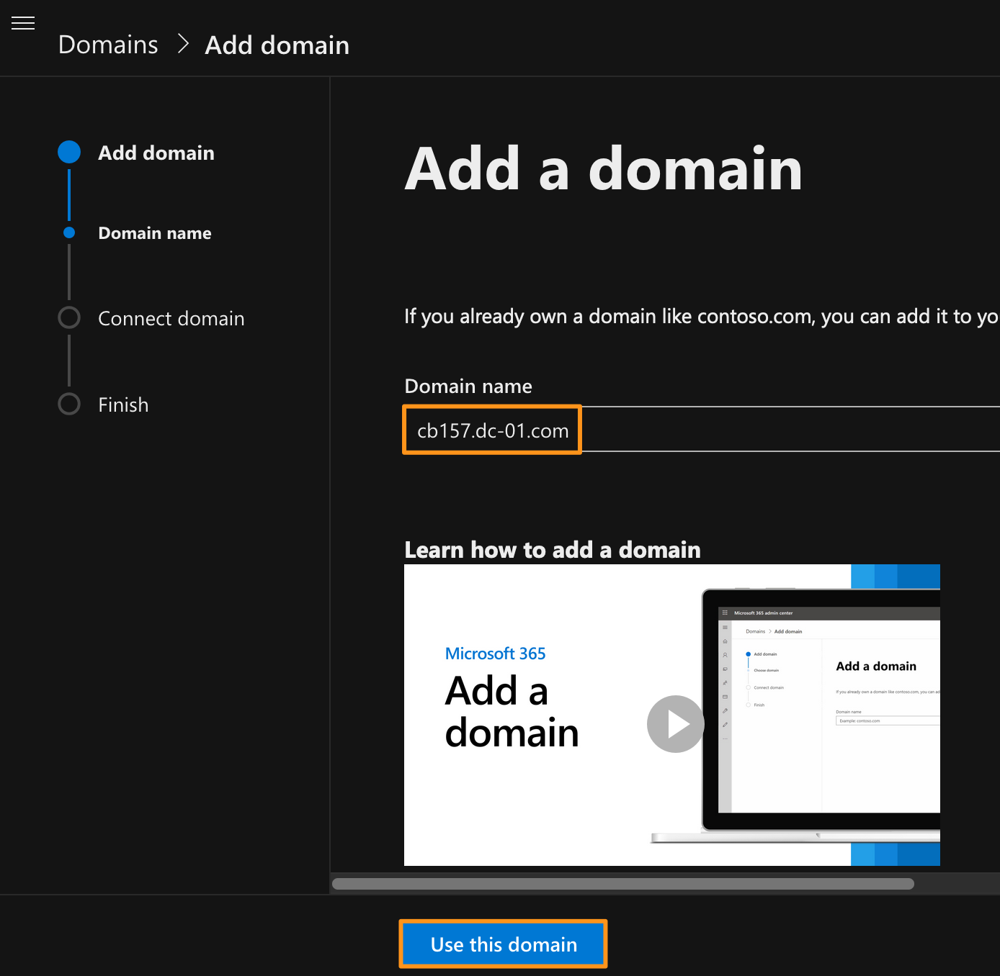
-
It will take you to Verify you own your domain page. Keep the radio button selected for Add a TXT record to the domain's DNS records and click Continue.
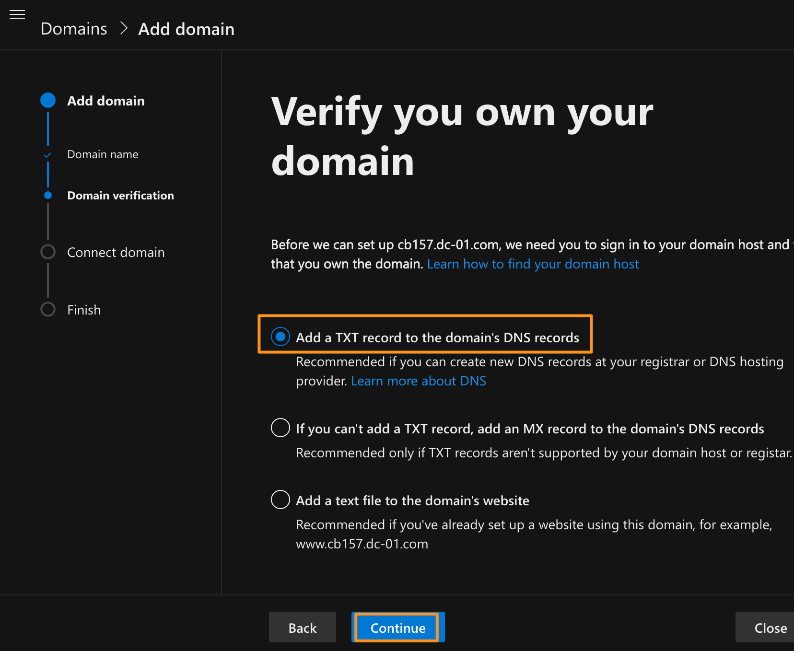
-
It will take you to Add a record to verify ownership page and will display a TXT name and TXT value. Copy the entire TXT value (you can use the copy icon next to it).
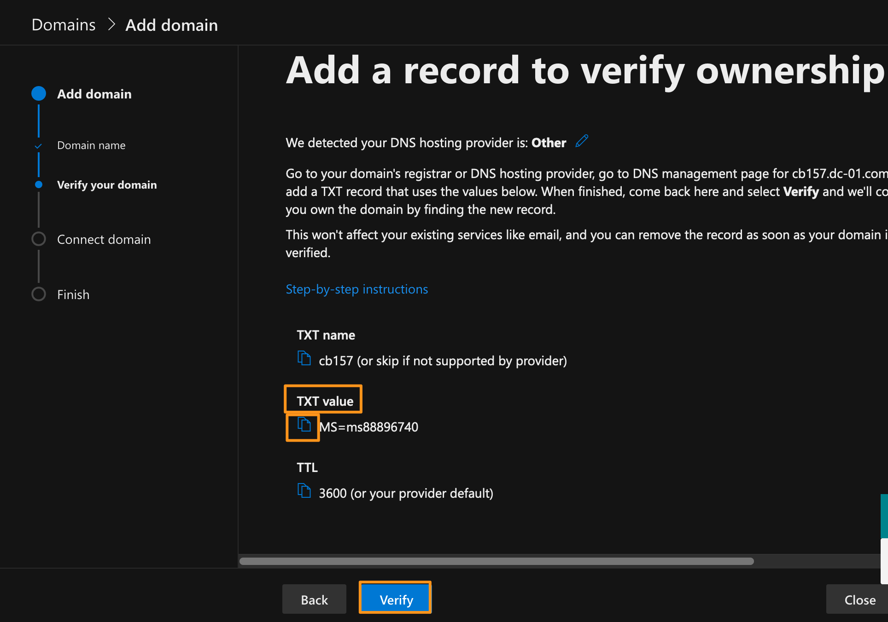
-
Go back to your dCloud lab/session page. Click on the Info tab, it will bring up a fly-out window on the left side. Scroll down on the fly-out window & drop down DNS. You will see an option to Add TXT Record. Enter the following values and click Save.
Domain Name: drop down and select your session domain (cbXXX.dc-YY.com)
Name: MS=ms88896740 (the value you copied above from your Microsoft tenant). It will be different for your session.
-
It will give add this TXT record to backend DNS service for verficaiton from Microsoft cloud.
-
Go back to workstation 1 where you had the Microsoft Admin page opened. Click Verify on the Add a record to verify ownership page.
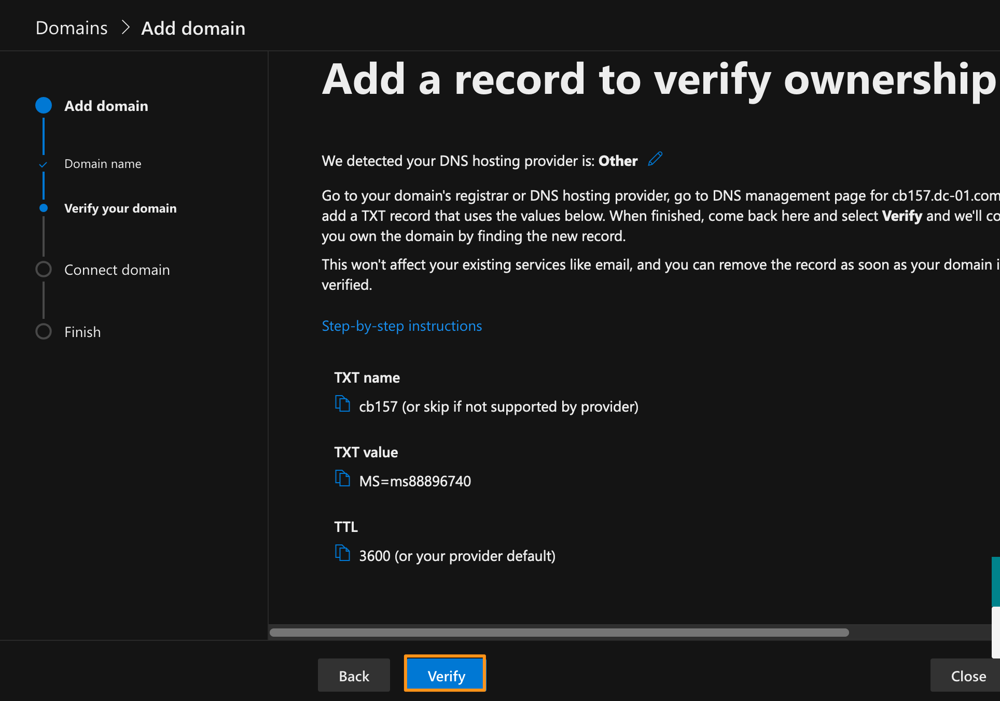
NOTE: Sometimes it may take longer to update the DNS TXT record you added just now, so in case if the verification fails, wait a few seconds and try again to verify.
-
It will take you to How do you want to connect your domain page. Keep the option Add your own DNS records selected and click Continue.
-
On the next page, Add DNS records page, uncheck the option for Exchange and Exchange Online Protection. Open/Click Advanced options and check mark Skype for Business. We need to add two CNAME records and two SRV records to the DNS server. Drop down CNAME Records (2) and SRV Records (2) to note/read the records/ports/TTL etc., for your knowledge. We have added these records already to DNS server to save the time. Once you reviewed them, click Continue.
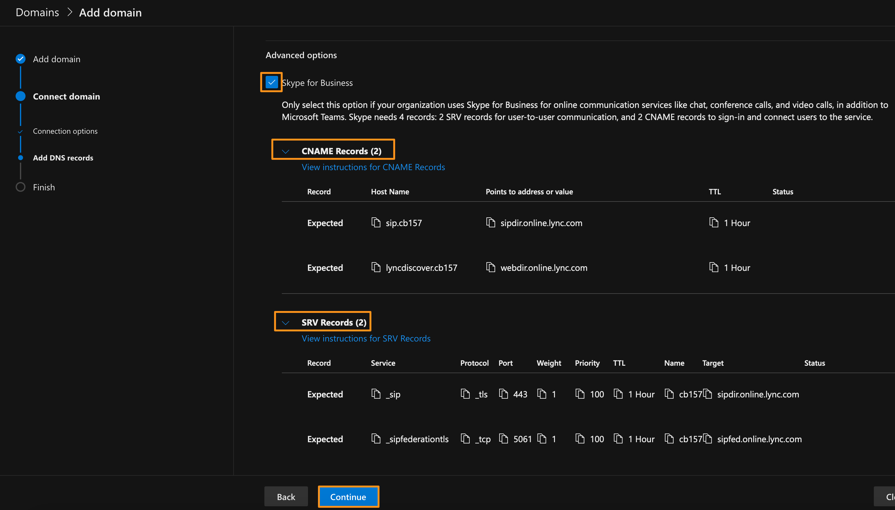
-
It will verify the DNS records and show the status of verification. The verification should be successful and it will give you a message saying "Domain setup is complete" as shown below. Click Done.
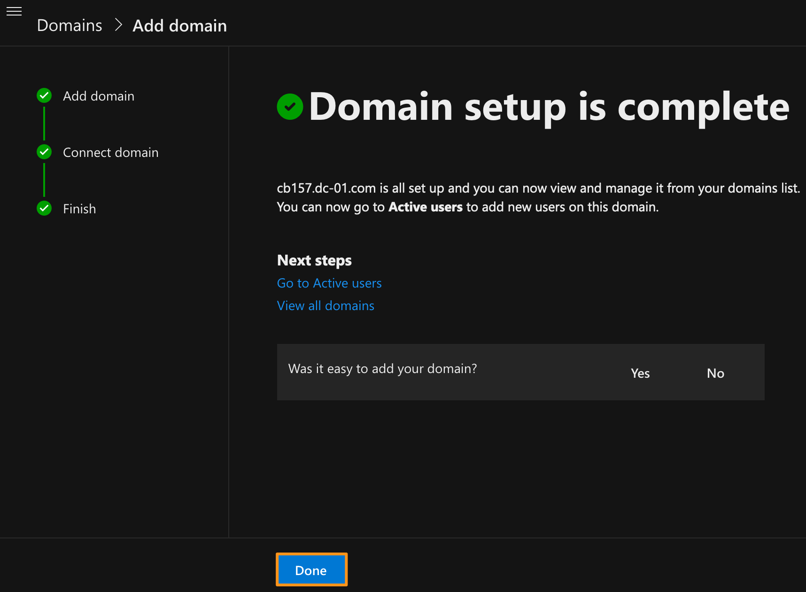
{kind=link}
This completes adding cbXXX.dc-YY.com domain to the Microsoft Trial tenant for your session
Update users on Microsoft tenant to cbXXX.dc-YY.com domain - [Approx 5 min]
As we have now added the cbXXX.dc-YY.com to the Microsoft tenant, let us update the user domain for user from cholland@dtbxxxxx.onmicrosoft.com to cholland@cbXXX.dc-YY.com.
-
Continuing on Workstation 1, go back to the Microsoft admin page where you logged in before. If the previous login is timed out login back again using the Microsoft Trial credentials given by your proctor for the lab.
-
Once you are on the admin home page, go to Users \ Active users
-
From the available users select Charles Holland, and it will open a flyout window. On the flyout window under Account click Manage username and email.
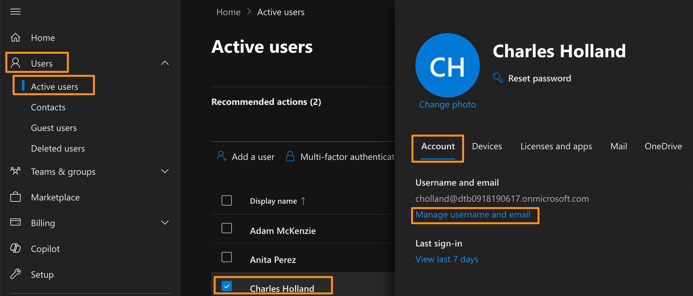
-
On the Manage username and email page, click edit (pencil icon towards the right) to modify the Primary email address and username.
-
Keep the username the same as cholland and drop down the Domain and choose the cbXXX.dc-YY.com domain that you added in the above section. Click Done and then click Save Changes.
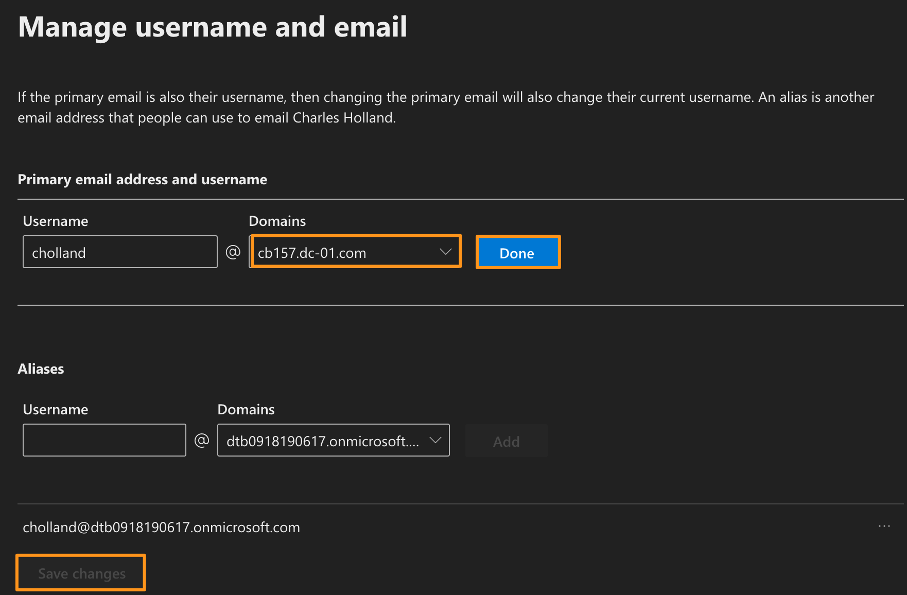
-
As soon as you click Save Changes, you will be logged out from the Microsoft Admin page, which is expected. As you have just updated the username and the primary email address to a new domain, it will log you out.
-
From now on you will use the email address cholland@cbXXX.dc-YY.com to log back into the Microsoft Admin Center.
-
Open a new browser tab and from the homepage go to Collab Admin Links \ Microsoft Admin Center and login as cholland@cbXXX.dc-YY.com and password as dCloud123!
-
Repeat this process, steps 2 through 5 (Manage username and email) for Adam McKenzie, Anita Perez, Kellie Melby, Monica Cheng, and Taylor Bard, and update the Primary email address and username domain to cbXXX.dc-YY.com. Once you have updated all listed users, the Active users list will be as shown below.
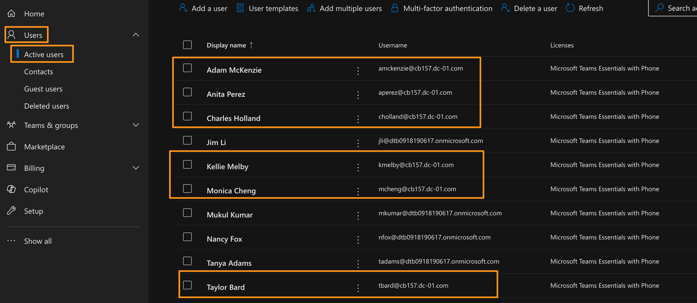
-
This completes updating users on Microsoft tenant to cbXXX.dc-YY.com domain.